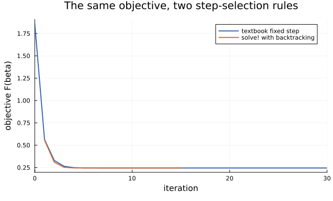

Proximal gradient descent
Prerequisites: the proximal operator, gradients and matrix norms.
After this chapter you can:
- Derive a proximal-gradient step from a quadratic upper bound.
- Implement a small reference solver and compare it with
solve!. - Read an objective trace without treating a stopping flag as a certificate.
Proximal gradient descent (PGD)
PGD updates all coefficients together. It first follows a gradient of the smooth squared-error loss, then soft-thresholds the proposed coefficient vector to account for the L1 penalty. Backtracking chooses a suitable step size. Here is PGD applied to the normalized least-squares lasso with lambda = 1.0:
using ProximalBase, ProximalSolvers
X = [1.0 0.0; 0.0 2.0; 0.0 0.0]
y = [2.0, -2.0, 0.5]
f = (1 / length(y)) * LeastSquaresLoss(y, X)
lambda = 1.0
penalty = NormL1(lambda)
beta = zeros(2)
result = solve!(beta, f, penalty, ProximalGradientDescent())
@assert all(isfinite, beta) && isfinite(result.minimum)
analytic = [0.0, -0.25]
grad = (X' * (X * beta - y)) / length(y)
kkt = [iszero(beta[j]) ?
max(abs(grad[j]) - lambda, 0.0) :
abs(grad[j] + lambda * sign(beta[j]))
for j in eachindex(beta)]
(; coefficients=beta, converged=result.converged,
max_coefficient_error=maximum(abs.(beta .- analytic)),
max_kkt_violation=maximum(kkt))(coefficients = [0.0, -0.2499946436204622], converged = true, max_coefficient_error = 5.356379537801992e-6, max_kkt_violation = 7.141839383661974e-6)The package's acceptance and stopping rules are specified in the line-search contract and the stopping contract. A stopping flag reports the implemented criterion; use the independent KKT calculation above when assessing the numerical result.
Review the sparsity and KKT check, then choose solver options.
Build an easy upper bound
For the least-squares loss,
\[\nabla f(\beta)=sX^\mathsf{T}(X\beta-y),\qquad \nabla^2f=sX^\mathsf{T}X.\]
Let L = s * opnorm(X)^2, where opnorm is the spectral norm. The largest eigenvalue of the Hessian is L, so the exact quadratic expansion gives
\[f(b)\le f(\beta)+\langle\nabla f(\beta),b-\beta\rangle +\frac{L}{2}\|b-\beta\|_2^2.\]
Add g(b) and minimize the right-hand side. Completing the square yields
\[\beta^{k+1}=\operatorname{prox}_{\gamma g} \bigl(\beta^k-\gamma\nabla f(\beta^k)\bigr),\qquad \gamma=1/L.\]
This argument needs L > 0; a completely zero design is a separate simple problem. In exact arithmetic, with convex g, an L-Lipschitz gradient and an existing minimizer, the fixed-step method has an objective-error bound of order 1/k. In particular, the usual bound at step 1/L is F(beta^k)-F* <= L*norm(beta^0-beta*)^2/(2k) for k >= 1. See Beck and Teboulle, Theorem 3.1. This concerns objective values; it does not directly bound coefficient error.
Computing a spectral norm is convenient for this small lesson. A practical backtracking method tries a curvature estimate, checks whether the local quadratic bound is adequate, and adjusts the estimate when needed. The package line search specifies its precise implementation.
A plain-Julia reference
The function below exposes the textbook iteration. It deliberately has a fixed iteration count so that the plot shows the update rule independently of a stopping heuristic. It is a teaching implementation for this dense, nonzero, Float64 design; it is not a substitute for the supported solver interface.
using LinearAlgebra, Random, ProximalBase, ProximalSolvers, Plots
function textbook_pgd(X, y, s, lambda; iterations=250)
beta = zeros(size(X, 2))
step = 1 / (s * opnorm(X)^2)
objective(b) = s * sum(abs2, y - X * b) / 2 + lambda * sum(abs, b)
objectives = [objective(beta)]
for _ in 1:iterations
proposal = beta - step * s * X' * (X * beta - y)
beta .= sign.(proposal) .* max.(abs.(proposal) .- step * lambda, 0.0)
push!(objectives, objective(beta))
end
beta, objectives
end
rng = Xoshiro(14)
X = randn(rng, 60, 12)
y = X[:, 1:3] * [1.5, -1.0, 0.5] + 0.2 * randn(rng, 60)
s, lambda = 1 / length(y), 0.08
reference_beta, reference_objectives = textbook_pgd(X, y, s, lambda)
beta = zeros(size(X, 2))
options = ProximalOptions(maxiter=2000, ftol=1e-13, xtol=1e-11,
gradtol=1e-9, allow_f_increases=true, store_trace=true)
result = solve!(beta, s * LeastSquaresLoss(y, X), NormL1(lambda),
ProximalGradientDescent(), options)
@assert isapprox(beta, reference_beta; atol=1e-6)
gradient = s * X' * (X * beta - y)
kkt = maximum(iszero(beta[j]) ? max(abs(gradient[j]) - lambda, 0.0) :
abs(gradient[j] + lambda * sign(beta[j])) for j in eachindex(beta))
@assert kkt < 1e-6
(; coefficient_difference=maximum(abs, beta - reference_beta), kkt,
iterations=result.iterations, converged=result.converged)(coefficient_difference = 4.707261247460792e-10, kkt = 3.5263125752749147e-10, iterations = 15, converged = true)The comparison checks both agreement with a transparent implementation and a KKT residual computed from the original data. The chosen tolerances make this small example reproducible; they are not an accuracy promise for other data.
objective_plot = plot(0:length(reference_objectives)-1, reference_objectives;
label="textbook fixed step", linewidth=2, color="#3366aa",
xlabel="iteration", ylabel="objective F(beta)",
title="The same objective, two step-selection rules", xlims=(0, 30),
size=(660, 400))
plot!(objective_plot, [state.iteration for state in result.trace],
[state.fg_x for state in result.trace]; label="solve! with backtracking",
linewidth=2, color="#d46b38")
savefig(objective_plot, "pgd-objective.svg")
The figure shows the first 30 iterations; the reference method ran for all 250 iterations before the final comparison. The curves need not follow identical paths: step sizes and stopping rules differ. A nearly flat objective curve is useful context, but it is not itself a certificate of optimality. Trace fields and callback behavior are described in the iteration contract.
Exercises
- Derive the quadratic upper bound directly from
f(beta+d)-f(beta). - Suppose
Xis multiplied by two whilesis fixed. How doesLchange? - Coding: replace the reference step by half its value. Compare objective traces, final KKT residuals and the
solve!result for the same problem. - Coding: stop the reference method after five iterations. Compute its KKT residual. Why can a decreasing objective coexist with an inaccurate fit?
Exercise answers
- The difference is
dot(gradient, d) + s*norm(X*d)^2/2; usenorm(X*d) <= opnorm(X)*norm(d). Lis multiplied by four, so the reference step is divided by four.- The smaller step still satisfies the upper-bound condition and typically makes less progress per iteration. Use the observed trace and residual to assess this example, not a universal runtime claim.
- Each step can improve the objective while leaving a large distance to the optimum. The KKT residual tests a condition at the returned point, whereas monotonicity compares that point with its predecessor.
Continue to acceleration.